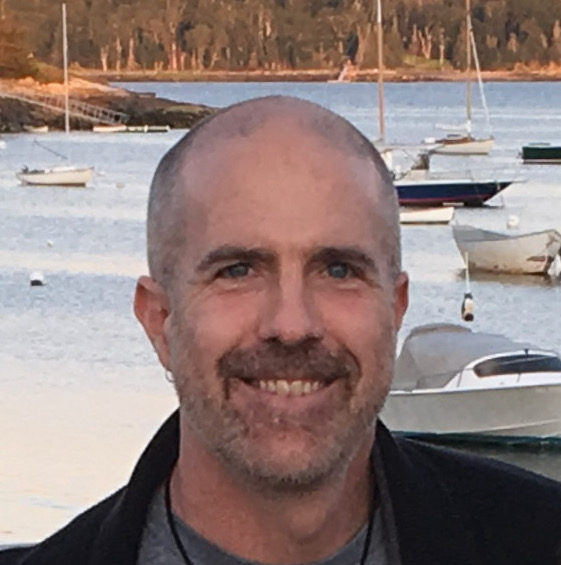

Current members
|  |
Dan Butts Associate Professor |
Matt Jacobsen NACS graduate student |
|
 |
Felix Bartsch NACS Graduate Student |
Hadi Vafaei Physics Graduate Student |
Alumni
- Jake Yates (former postdoc), now an Assistant Professor at UC Berkeley.
- Ethan Cheng (former undergraduate Honors student, grad 12/2021), now a Neuroscience grad student at Stanford University.
- Matt Whiteway: former AMSC graduate student (Ph.D. 5/2018), now at the Zuckerman Institute, Columbia University
- Oliver Rourke: former AMSC graduate student (Ph.D. 12/2017), now at Google.
- Yuwei Cui: former NACS graduate student (Ph.D. 6/2015), then at Numenta
- James McFarland (former postdoc), now the Director of Data Science at the Broad Institute
- Timm Lochmann (former postdoc)
- Nadja Schinkel-Bielefeld (former postdoc)
- Pranjal Gupta: former undergraduate (grad 2018), now at Duke Neurobiology
- Alexandra Boukhvalova: former undergraduate (grad 2017), now at UMD School of Medicine
- Fang Cao (former undergraduate)
- Daniel Farias (former undergraduate)
- Carl Sabottke (former Masters student)
- Lukas Mesik (former undergraduate)